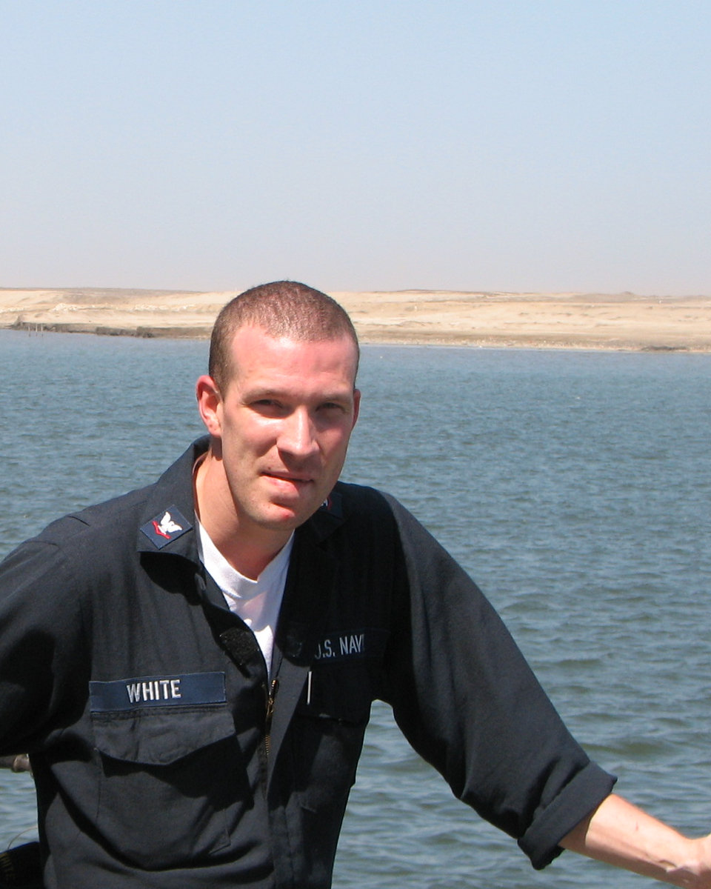
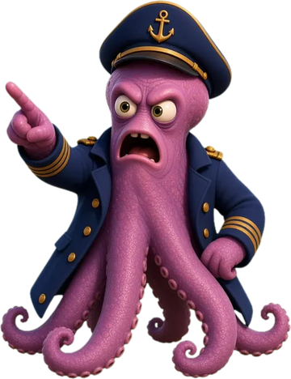
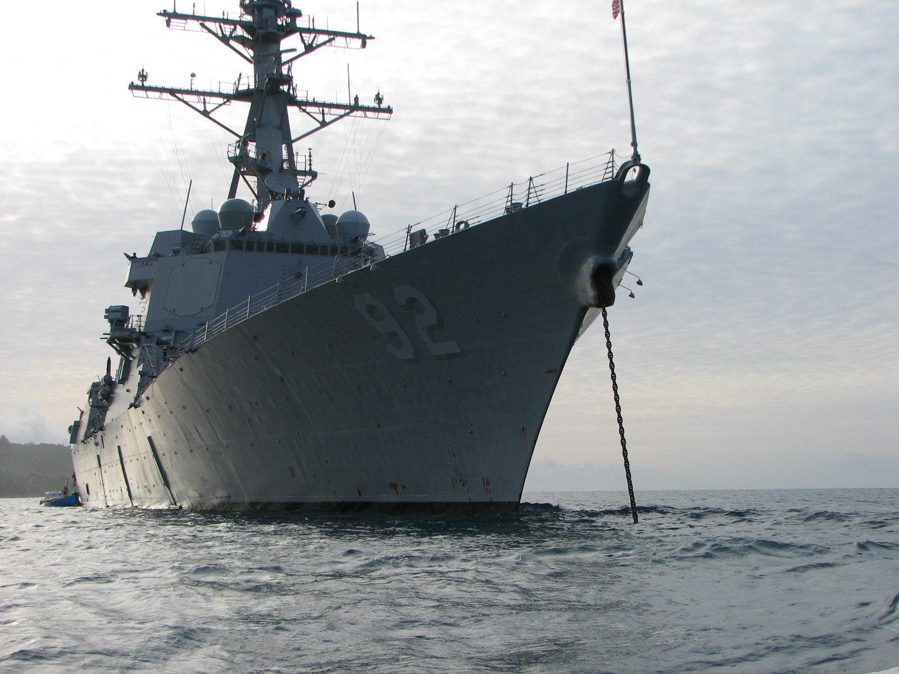
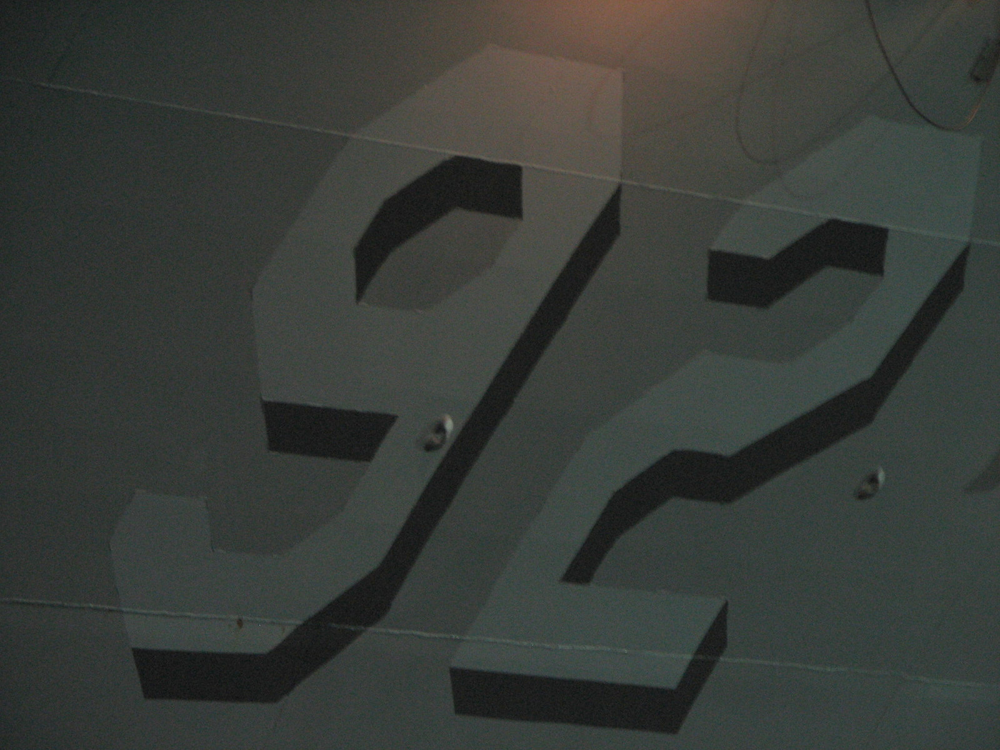
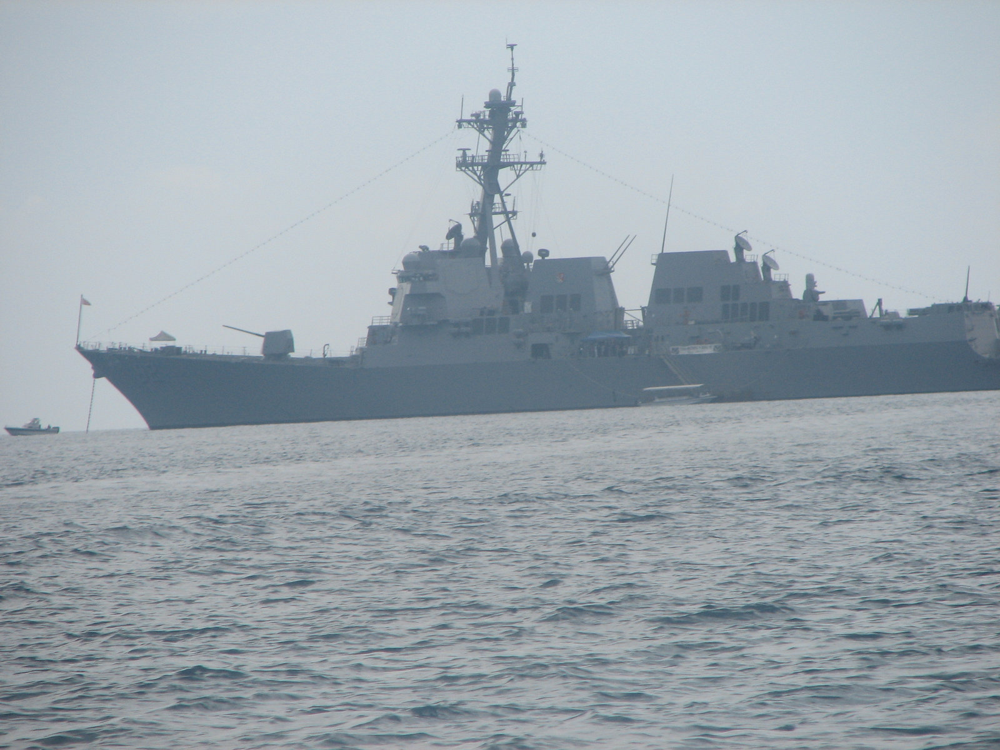
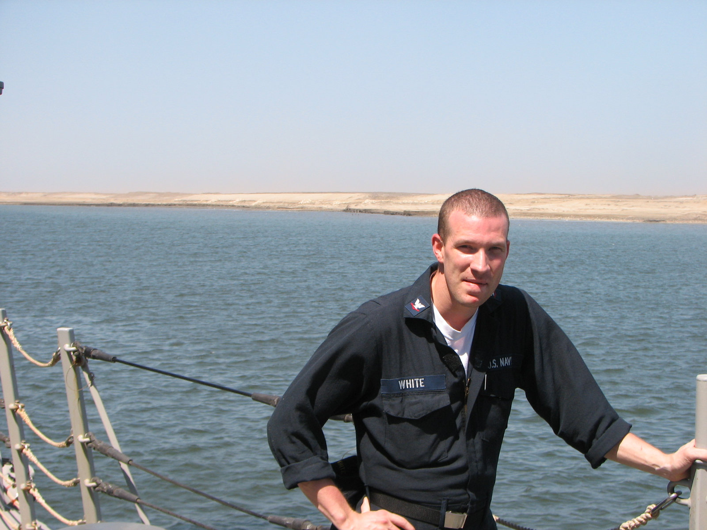
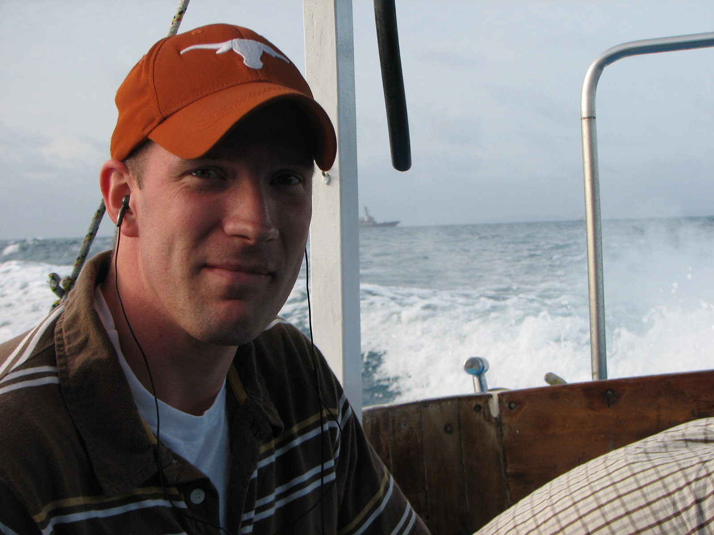
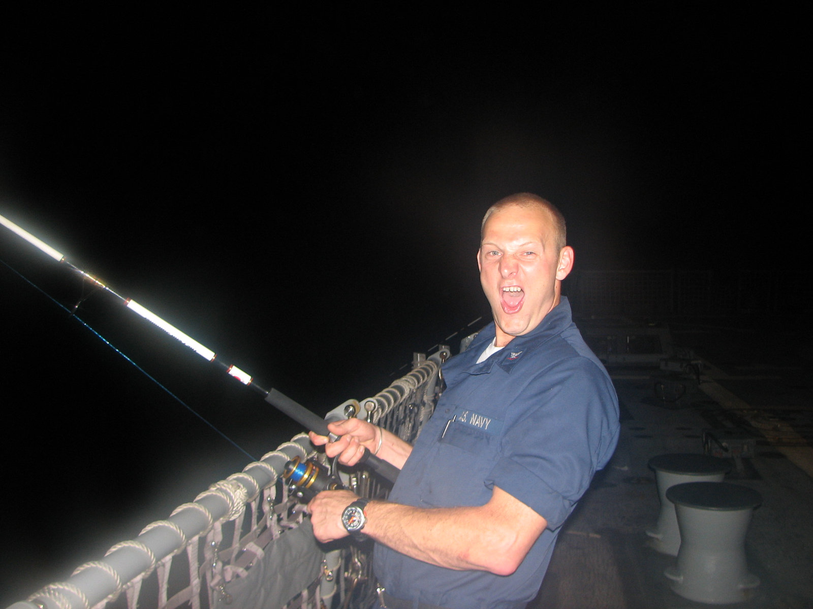

The people behind the Files
About Ghost Ship Files
True shipwreck mysteries. New File every week. Visuals include AI-style recreations, labeled on screen and on this site.

Host
Jeremy White
Jeremy is a Navy Veteran. He served 8 years in the U.S. Navy, 2003–2011, as a Gas Turbine Systems Technician and plank owner on USS Momsen (DDG-92). He hosts Ghost Ship Files and opens each case with Captain Eight.

Co-host
Captain Eight
Captain Eight is an animated character — the octopus in the coat and hat who opens each File, walks the story, and lands the takeaway. He is not a real captain. The history, when it is history, is real.
Plank Owner, USS Momsen
Photo wall · 2008Jeremy served as a Gas Turbine Systems Technician and plank owner on USS Momsen (DDG-92) from 2003 to 2011. The photographs below are from 2008, during that tour. Select a frame to open a larger view.
-

USS Momsen (DDG-92) at sea, 2008. -

The hull number 92 on USS Momsen, 2008. -
The bow of USS Momsen at sea, 2008. -

A U.S. Navy destroyer at sea, 2008, photographed during Jeremy’s service on USS Momsen. -

Jeremy on the deck of USS Momsen, 2008. -

Jeremy in a small boat, 2008, with a warship on the horizon. -

Jeremy fishing from the ship at night, 2008.


What you’ll find here
Each File is a shipwreck mystery, a survival story, or a Navy case, told in a long video with Shorts spun off from it. The Gear page collects the Amazon picks that match each story.
Also from Jeremy: Veteran Edge AI, a veteran-owned business. If you run a business and need a hand, reach out: veteranedge-ai.vercel.app.